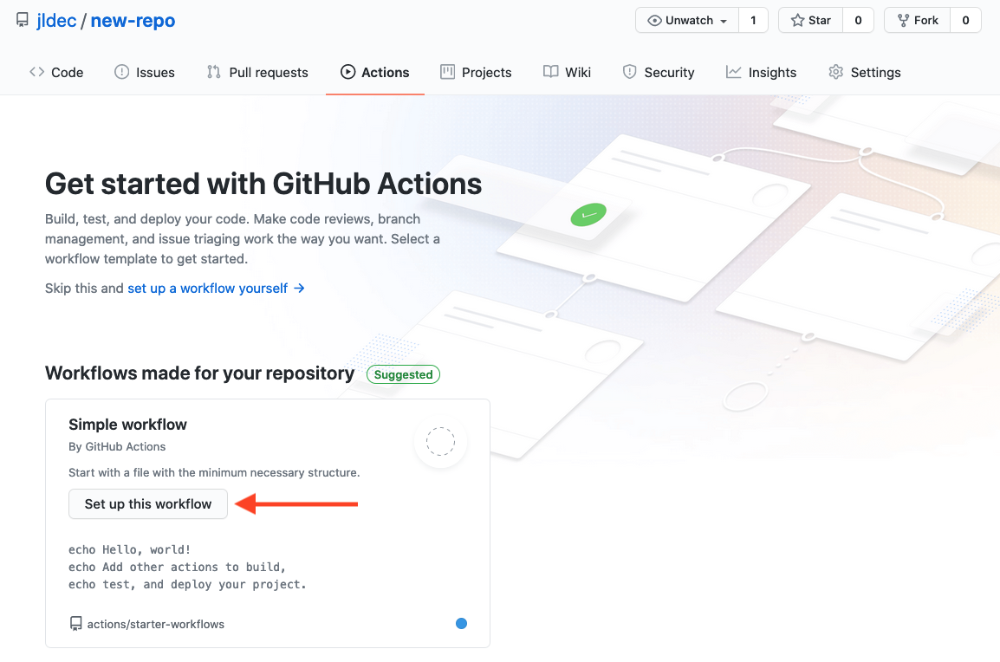
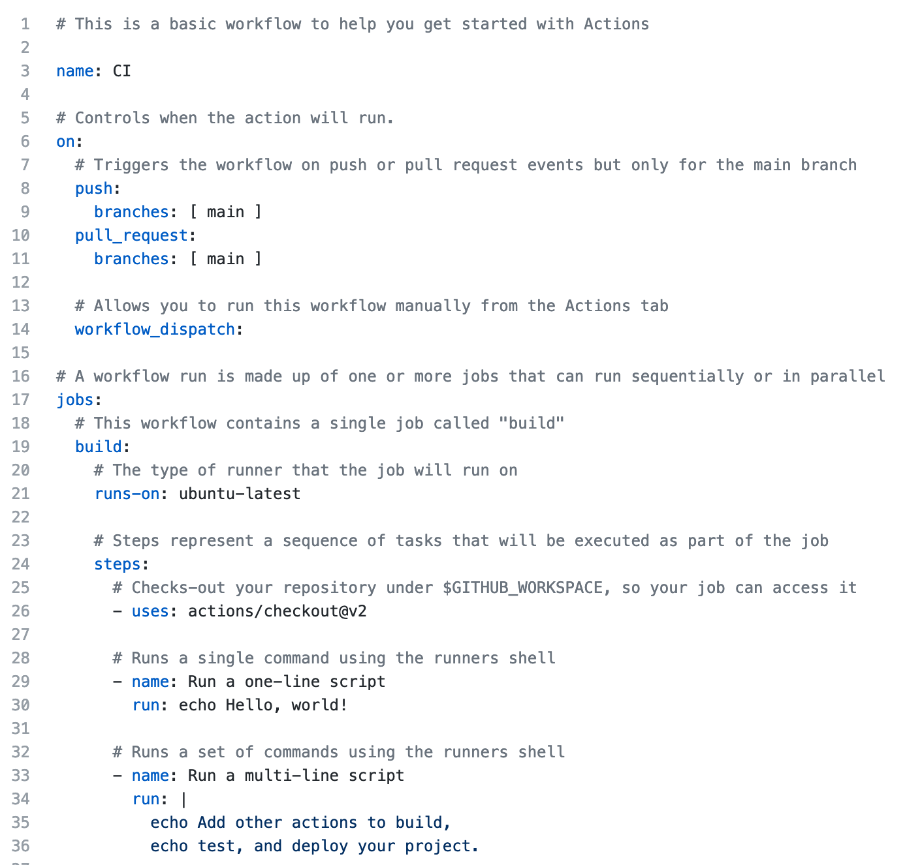
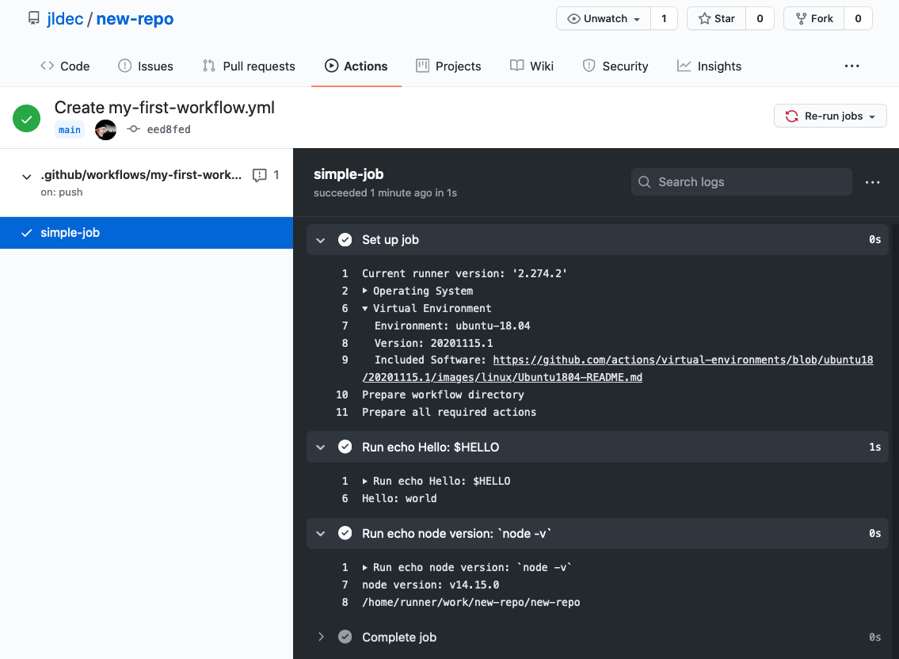

How do GitHub Actions work?
Today I was feeling a bit lost (again, sigh) trying to understand GitHub Actions.
Specifically, the documentation did not appear to have an overview of how actions are composed and what they are composed of. What are those things that run? How are they named and referenced?
In retrospect, instead of the docs, I would recommend getting started by looking at the yaml for the Simple workflow. The button appears in the Actions tab on any new repo.

The button will open the workflow yaml in an editor (it won't be committed to your repo yet).

Not so mysterious after all
The first takeaway is that actions can be written using simple shell commands.
Commands run in a shell in VMs which come preinstalled with commonly used tools. There is no need to learn a new scripting language. You can even write your action as a shell script in a file, and invoke it from the workflow yaml.
If you want, you can package and re-use portions of a job in different workflows. These components are also called actions (that's where some of my initial confusion originated), but you don't need to learn to write those yourself in order to build your own workflows.
Don't be thrown off by the yaml
Each job is identified by its key e.g. simple-job in the example below.
The workflow syntax documentation denotes this as jobs.<job-id>.
on: push
jobs:
simple-job:
runs-on: ubuntu-latest
env:
HELLO: world
steps:
- run: 'echo Hello: $HELLO'
- run: |
echo node version: `node -v`
pwd
steps: contains a list of commands, each described by a run:
(In the earlier example above, there is also an action, described with uses: instead of run:)
The 1st run: command above is quoted, to avoid ": " being interpreted as a yaml map.
The 2nd run: contains 2 commands in a multi-line (indented) block using "|". This syntax does not require quotes, making it convenient for embedded scripts.
If you push the workflow above to a new repo on GitHub, the result should look like this:

A few more things to know about yaml
- You can test the validity of your yaml online.
Seeing the JSON representation will often clear up confusion. - Quotes around (scalar) strings are optional, BUT there are a lot of gotchas!
E.g. look out for strings with '- ' at the start, or ': ' or '#' in the middle, or ':' at the end, or strings that look like numbers or booleans. - Maps are usually written as
key: valuelines at the same indentation.
Lists are usually written as lines with- value.
Or use{key1: v1, key2: v2, ...}for maps,[v1, v2, ...]for lists. - Indentation must use spaces (no tabs).
- For more about multi-line strings see https://yaml-multiline.info/.
Have fun playing with GitHub Actions
To leave a comment
please visit dev.to/jldec
powered by pub-server and pub-theme-pubblog